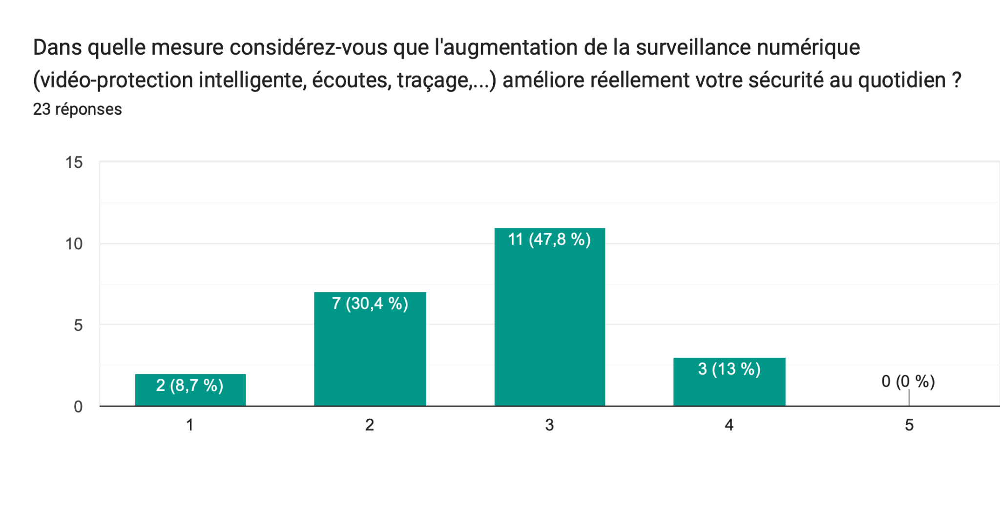

Enquêtes et Travaux de Terrain
I. Témoignages d'Experts
Nous avons rencontré des acteurs clés pour recueillir leurs perspectives sur la surveillance numérique
Chère Madame, cher Monsieur,
Dans le cadre de mon cursus d'étudiante en première année à l'École Centrale de Lille, je participe à un projet intitulé « cartographie des controverses », pour lequel mon groupe et moi avons choisi de nous pencher sur la problématique suivante : « Les dispositifs de sécurité publique justifient-ils l'extension progressive de la surveillance numérique des citoyens ? ».
Mon rôle est de recueillir l'opinion de différents acteurs sur cette question, c'est pourquoi je me tourne vers vous.
Auriez-vous des disponibilités cette semaine ou la semaine suivante pour échanger sur le sujet via un appel téléphonique ou une visioconférence ? Le cas échéant, pourriez-vous, s'il vous plaît, me communiquer votre position par retour de mail ?
Je vous souhaite une belle année 2026 et vous prie d'accepter l'expression de mes sentiments respectueux.
Bien cordialement,
Juliette Bros
Journal de bord des prises de contact
Note : D'autres organisations ont été sollicitées pour leur expertise, notamment Amnesty International, l'Institut Montaigne et la Quadrature du Net.
Maître Marcel Moritz
Avocat au Barreau de Lille & Maître de Conférences HDR
Expertise : Droit des technologies innovantes, droit du numérique, blockchain et web3
Contact : marcel.moritz@univ-lille.fr
Titulaire d'un magistère en droit des affaires et docteur en droit public. Auteur de nombreuses publications en droit des médias et technologies. Anime le Master 2 droit du numérique et le DU informatique et libertés à l'Université de Lille.
Écouter l'interview complète
⏱️ Durée : 19 minutes | 📅 Date : 12 janvier 2026
Questions abordées
« Pourquoi semble-t-il y avoir un tel manque de débat parlementaire et citoyen autour de l'implémentation de ces technologies, comme pour le fichier TES ou les JO ? »
Réponse : Plusieurs facteurs l'expliquent. D'abord, l'argument du « nothing to hide, nothing to fear » est très présent. Ensuite, il y a une méconnaissance technique du grand public. Enfin, nous vivons dans un monde perçu comme dangereux, ce qui pousse les citoyens à accepter des mesures qu'ils auraient refusées auparavant.
« Comment expliquer que des dispositifs présentés comme "expérimentaux" finissent par s'installer durablement ? »
Réponse : C'est l'effet cliquet : une fois qu'une technologie est expérimentée, on a tendance à la conserver systématiquement. Même si les rapports pointent des faiblesses ou une efficacité relative, la marche arrière est rarement enclenchée, et le dispositif est prolongé au nom de la sécurité.
« En quoi la surveillance numérique modifie-t-elle notre comportement en tant que citoyens, même si nous ne sommes pas des criminels ? »
Réponse : La surveillance induit un « chilling effect » (effet de gel) : c'est une forme d'inhibition. À partir du moment où l'individu sait qu'il est surveillé, il ne peut plus exercer ses libertés de la même manière. Il s'auto-censure, ce qui altère profondément l'exercice de la démocratie.
« Les algorithmes de surveillance sont-ils neutres ou peuvent-ils accentuer les inégalités sociales ? »
Réponse : Ils ne sont pas neutres. Par exemple, un système détectant des "objets abandonnés" signalera automatiquement des sans-abri (SDF). Cela crée une discrimination de fait : la police est orientée vers ces populations vulnérables par l'outil technique, transformant un problème social en alerte sécuritaire.
« Que nous disent les études sociologiques sur ce que les citoyens attendent vraiment de la surveillance ? »
Réponse : Les études montrent un paradoxe étonnant. Beaucoup de citoyens ne veulent pas de panneaux d'information ou de débats, mais veulent que la technologie soit "invisible" (ne pas voir le drone). Une partie de la population préfère ignorer la surveillance plutôt que d'y être confrontée visuellement.
« La mise en place de ces outils répond-elle toujours à un besoin d'efficacité réelle contre le crime ? »
Réponse : Pas forcément. Souvent, c'est une réponse politique pour donner des "gages" à un électorat inquiet. Installer des caméras ne règle pas le narcotrafic (cela déplace le problème), mais pour un élu, c'est une preuve matérielle d'action, un symbole plus qu'un outil d'efficacité réelle.
Claire Bélart
Professeure en Sociologie - École Centrale de Lille
Expertise : Modélisation des systèmes complexes, épistémologie, cartographie des controverses
Contact : claire.belart@centralelille.fr
Spécialiste de l'approche systémique et de la théorie du système général de Jean-Louis Lemoigne. Responsable du module Complexité-Modélisation en première année.
Écouter l'interview complète
⏱️ Durée : 32 minutes | 📅 Date : 14 janvier 2026
Regards Sociologiques & Rapports de Pouvoir
« Pourquoi l'argument de la sécurité publique est-il si puissant alors que les statistiques de délinquance sont relativement stables ? »
Réponse : La sécurité est devenue un produit politique "vendeur". On est passé d'une société qui gérait la pauvreté à une société qui pointe le concitoyen comme une menace. On utilise des faits emblématiques pour entretenir un fantasme qui justifie le recours à la technologie : c'est le passage de la protection sociale à la protection "contre les autres".
« Est-ce que la surveillance numérique pèse de la même manière sur tous les citoyens ? »
Réponse : Non, les populations déjà fragilisées (jeunes, immigrés, personnes hors-normes) subissent plus durement la surveillance. La technologie renforce la stigmatisation : un comportement "hors-norme" sera immédiatement capté et traité comme une déviance, alors que la "norme" est une construction sociale relative.
« Peut-on faire confiance aux algorithmes pour rendre la sécurité plus objective ? »
Réponse : Absolument pas. L'idée que la technique va tout résoudre occulte le fait que les algorithmes sont remplis de biais humains. Ils ne sont ni neutres, ni objectifs : ils reproduisent les préjugés de leurs concepteurs. L'absence de doute face à la machine est l'un des plus grands dangers actuels.
« Finirons-nous par oublier que nous sommes surveillés à force de voir ces dispositifs partout ? »
Réponse : Oui, la technique finit par devenir une routine, une "boîte noire". On en oublie les intentions de départ pour ne garder que l'aspect utilitaire. Cette surveillance numérique est "indolore" et indirecte (contrairement au panoptique de Foucault), ce qui la rend plus facile à accepter et à oublier.
« Au-delà de l'État, pourquoi les citoyens installent-ils eux-mêmes de la surveillance (maisons connectées) ? »
Réponse : C'est une question de domination sur son propre espace. Dans une société de pressions extérieures, posséder des outils de surveillance donne la sensation d'être "le chef chez soi". C'est une forme de repli individualiste où la maîtrise technique compense une perte de contrôle sur le monde extérieur.
« Les grands événements comme les JO ont-ils servi à imposer ces technologies sans discussion ? »
Réponse : Oui, le politique a utilisé la "ferveur populaire" des JO pour faire passer la pilule. En jouant sur l'affect (émotion des jeux, sécurité des athlètes), on évacue le doute et le débat de fond. On remplace la réflexion démocratique par une communication sur la réussite de l'événement.
II. Analyse de la Perception Citoyenne
Profil des sondés : Sur 23 réponses recueillies, 52,2% ont entre 18 et 20 ans et 43,5% ont entre 20 et 25 ans. Échantillon majoritairement Génération Z.
Fait notable : 21,7% ont déjà ressenti une expérience négative liée à la surveillance.
Sécurité et Intimité
L'opinion est partagée sur l'efficacité réelle de la surveillance pour améliorer la sécurité.

Réticence marquée à sacrifier la vie privée numérique pour la sécurité.
Rapport aux Autorités

Le degré de confiance envers l'État est globalement bas.

Crainte majeure du détournement des données par des entités politiques.
Cadre d'Application

Acceptation de la reconnaissance faciale uniquement sous menace confirmée.

Les mesures sont jugées proportionnées mais pas forcément efficaces.